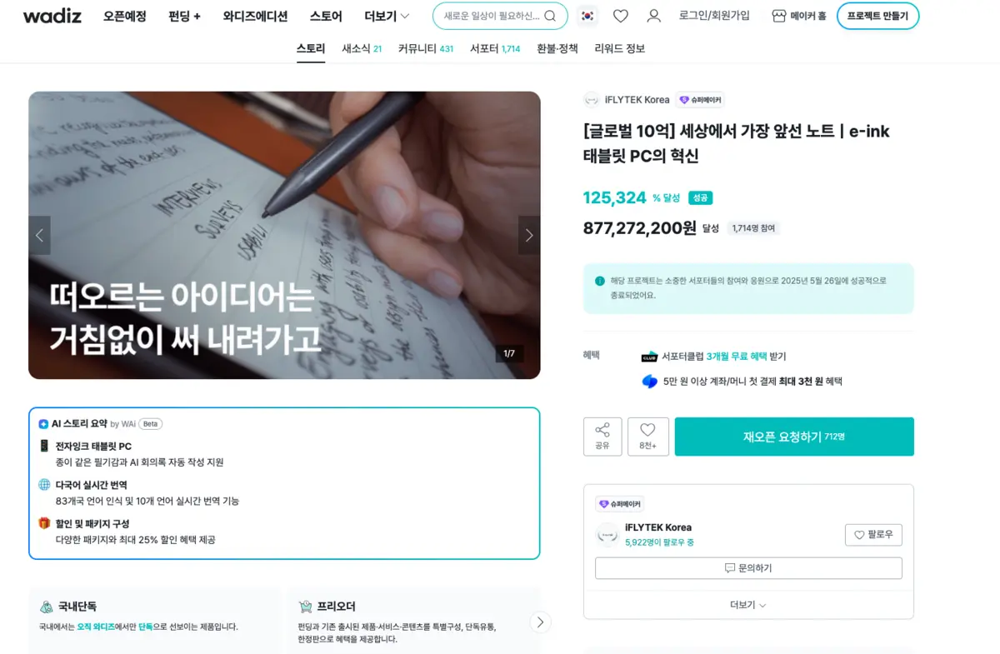
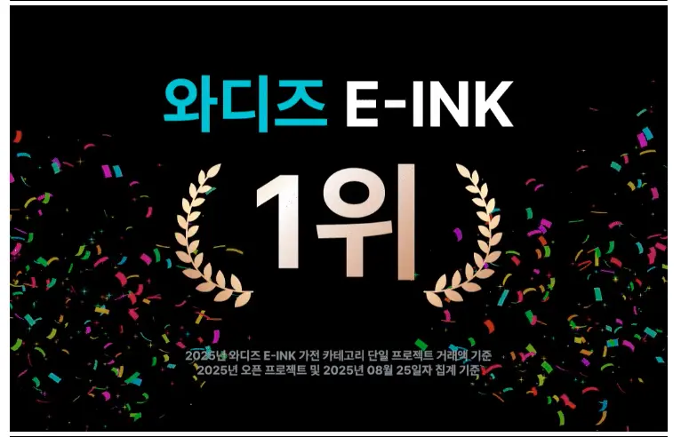
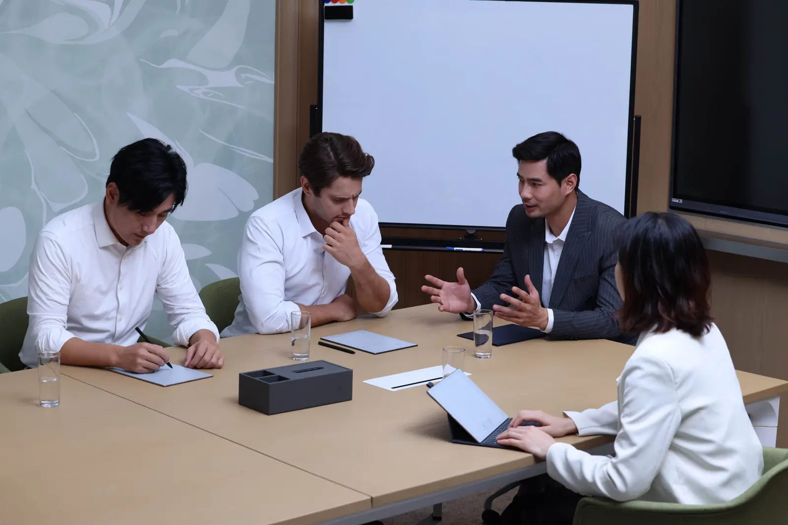
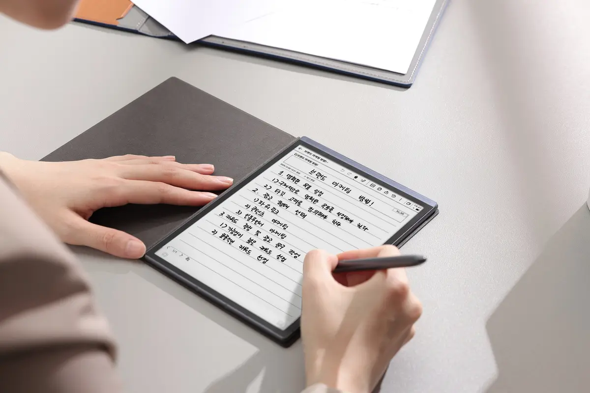
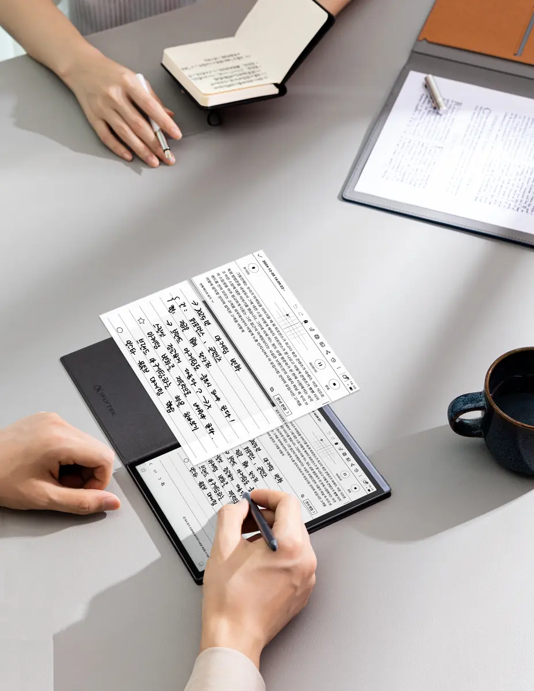
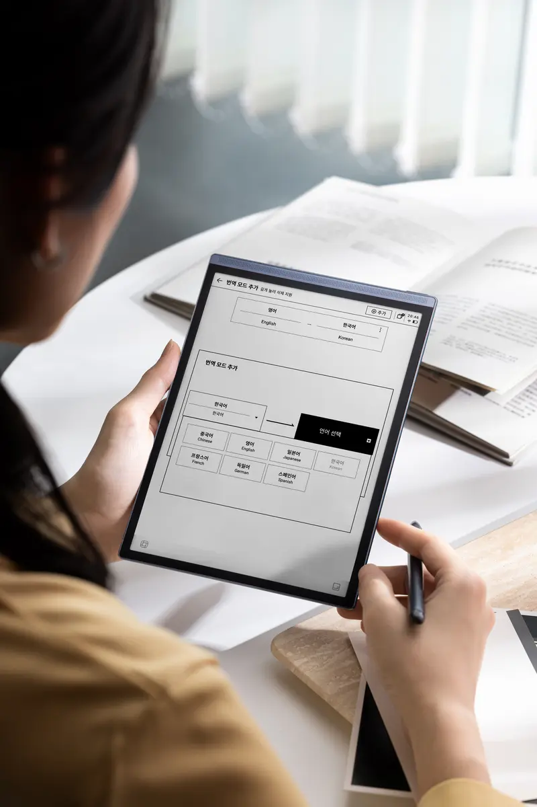
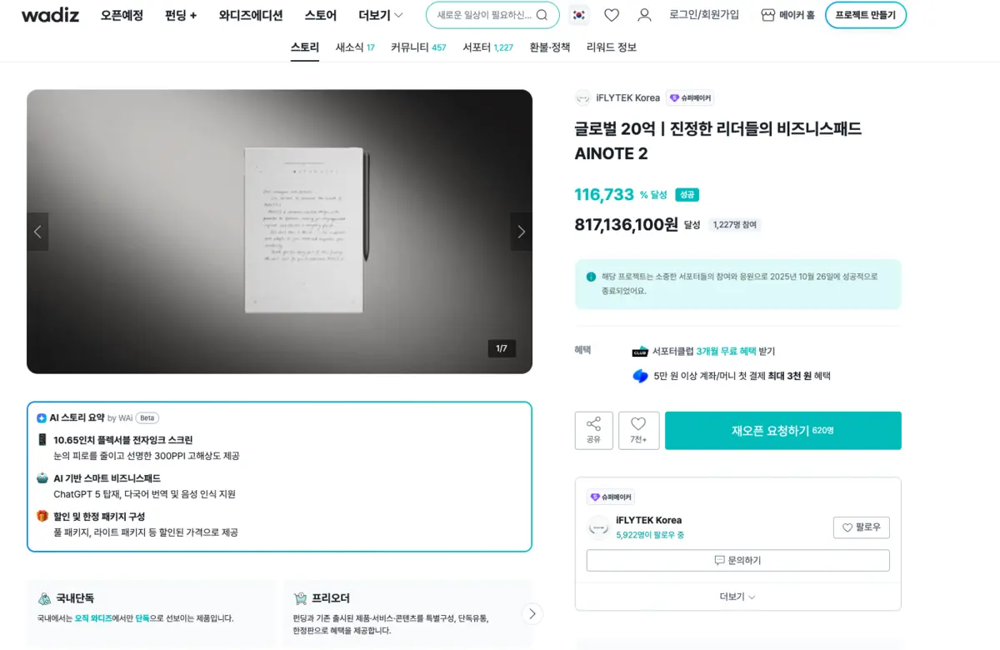
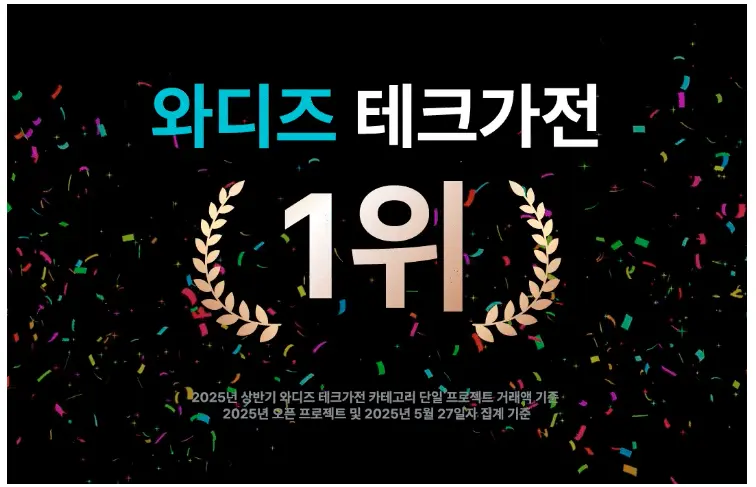

Category proof
No.1 in Wadiz E-ink
The launch turned unfamiliar benefits into visible use cases and category credibility.
AINOTE Series · Korea · 2025
I led Korea GTM for AINOTE Air 2 and AINOTE 2—from positioning and creative direction to creator strategy, paid media and commerce.
Explore the caseThe market problem
A category people could not name yet
AINOTE sat between categories: an e-ink notebook, an AI meeting assistant and a multilingual work tool. Listing every function made it sound technical; calling it a tablet made it feel interchangeable.
We needed a story Korean professionals could understand in seconds—and enough visible proof to trust a new hardware category.

Positioning
The strategic shift
The message ladder stayed simple: focus on the conversation, capture what matters, then turn it into usable work.

Lead with the familiar feel of paper before asking people to understand the AI.

Bring handwriting, audio and transcription into one searchable record.

Show translation as part of a real workflow—not as a technical claim.
Commercial proof
Launch, learn, repeat
Both launches used Wadiz as a live market-validation engine, supported by paid social, creator reviews, Naver, PR and product education.


The launch turned unfamiliar benefits into visible use cases and category credibility.


The second launch applied the same GTM system to a broader business-use story.
Social-first creative
A portfolio of creative roles
Pre-launch creative earned attention, use-case films built confidence, and conversion assets gave people a reason to act. We judged each asset by the job it was designed to do.
The winner changed with the objective. A timely hook earned the click; clearer product utility did more of the selling. Instead of searching for one universal hero asset, we built distinct roles for hook, demonstration, reassurance and conversion.
Creator proof
Trust through demonstration
Independent reviewers put AINOTE into recognizable routines. Owned how-to content then answered the functional questions that turn curiosity into confidence.

See the AINOTE 2 meeting-recording guide
What carried forward
“Urgency works only after value is clear.”
For a new technology category, creative clarity is a growth lever: name the job, show the workflow, add trusted voices, then give the audience a reason to act.
Let's talk